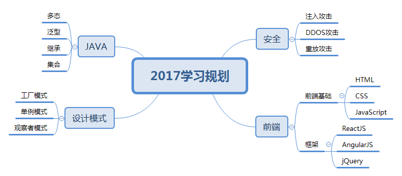

利用思维导图提升工作效率
很多时候我们讨论一个问题的解决方案时，感觉有很多想法，但是感觉不是非常清晰，没有办法把它们串起来，形成一个整体的解决方案。
这主要是因为我们进行思维发散时，尤其是深入发散时，大脑无法记忆跟踪所有的发散路径，导致大脑无法形成一个全景的思考脉络。我们可以借助一些工具辅助我们进行思维发散，提升工作效率，例如思维导图。
什么是思维导图？
思维导图又叫心智图，是表达发射性思维的有效的图形思维工具，它简单却又极其有效，是一种革命性的思维工具。思维导图运用图文并重的技巧，把各级主题的关系用相互隶属与相关的层级图表现出来，把主题关键词与图像、颜色等建立记忆链接。思维导图充分运用左右脑的机能，利用记忆、阅读、思维的规律，协助人们在科学与艺术、逻辑与想象之间平衡发展，从而开启人类大脑的无限潜能。思维导图因此具有人类思维的强大功能。 思维导图是一种将放射性思考具体化的方法。
思维导图的主要使用场景
思维导图可以应用在多个使用场景中，例如画简历、作决策、列计划、写提纲、理关系、记笔记、送礼物等。我在工作中主要使用思维导图写提纲、列计划等。
例如，我在写文章或者制作PPT时，首先利用思维导图列出内容的提纲，然后逐步细化，这时候内容的结构已经非常清晰了，再去写文章或者制作PPT就非常简单了。其实这种利用思维导图写文章的方式和系统架构的过程是非常相似的，就是先有架构，然后才去写代码，其实更像在架构中填充代码。
而制作计划是我们利用思维导图的另一个场景，比如我在规划2017年的学习计划时，就用思维导图先列出一级标题，比如JAVA、设计模式、安全，接下来分别对各个大项进行逐步细化，这样的计划结构清晰，一目了然。例子如下：
思维导图的使用场景还有很多，只要是思维发散的场景都适合使用，大家自己慢慢体会。
思维导图软件比较多，例如XMind，Mindjet，MindMapper，FreeMind等，我个人比较喜欢使用XMind，它有免费版的，基本满足我日常需求。